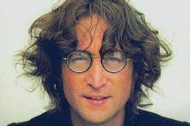
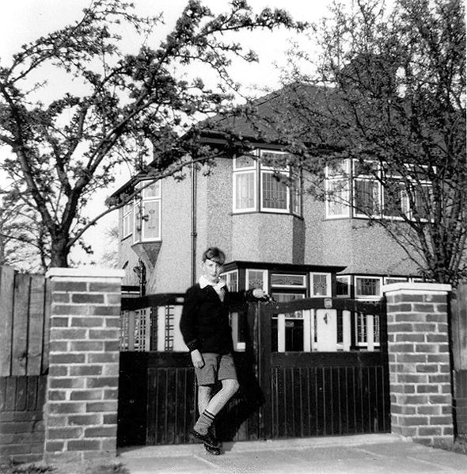
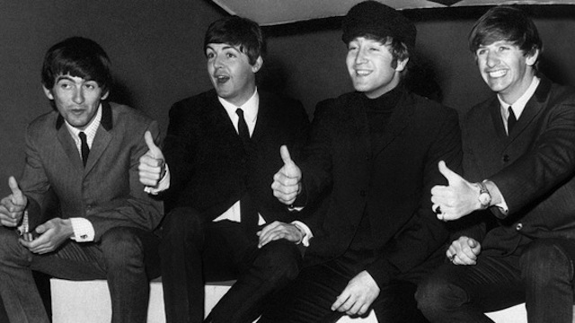

Nasplošno je znan kot eden izmed ustanovnih članov skupine The Beatles. Veliko ljudi se ga spominja kot enega najbolj prepoznavnih pevcev vseh časov zaradi pesmi kot so 'Yesterday', 'Let it be', 'I want to hold your hand', 'Imagine' in mnogo drugih.
Lennon se je rodil v Liverpoolu staršema Julii in Alfredu Lennon. Oče je bil pomorščak in zaradi tega, ga ni bilo dlje časa doma. Lennonova mladost ni bila lahka, saj zaradi odsotnosti očeta je mladost večinoma preživel pri stricih Mimi in Georgu Smith. Že v mladosti se je ukvarjal z glasbo in je bil nadarjen za umetnost. Obiskoval je krščansko osnovno šolo in nato nadaljeval študij na liverpoolski gimnaziji Quarry Bank High School. V letih gimnazije je ustanovil skupino The Quarryman kateri se je kasneje pridružil še Paul McCartney. Skupini sta se nato pridružila še George Harrison kot kitarist in Stuart Sutcliffe kot basisit. Lennon je študij nadaljeval na Univerzi Liverpool College of Art, ampak študij ni dokončal. V 60. letih so se Quarrymani preimenovali v The Beatles in že istega leta sklenili dogovor za nastopanje v Hamburgu. Takrat so nujno potrebovali baterista in so povabili Peta Besta, da naj bi se jim pridružil. McCartney je prevzel mesto basista, ko se je Sutcliffe odločil ostati v Hamburgu. Ringo Starr pa ja nadomestil bobnarja Peta Besta. Sestava skupine je ostala takšna do razpada skupine leta 1970.

Od leta 1963 se je začela zlata doba Beatlov. V tem letu je Lennon tudi dobil prvega sina Juliana s prvo ženo Cynthio medtem, ko je bil na turneji po Angliji. Njihove pesmi so postale popularne ne samo v Združenem Kraljestvu ampak tudi po svetu. Beatli so bili deležni priznanja s strani Velike Britanije, ko so bili odlikovani z Redom britanskega imperija in Queen's Birthday Honours leta 1965. Po njihovem zadnjem koncertu pred publiko 29. avgusta 1966 se je Lennon začel počutiti izgubljen ter začel razmišljati o odhodu iz skupine.
|
 |
Po nezaželjenem stiku z drogo LSD je od nje postal odvisen in kmalu so o njem pravili, da je tvegal, da bi postal neprepoznaven. Po smrti prvega menedžerja Beatlov Briana Epsteina se je skupina vedno bolj vpletala v poslovne aktivnosti in tako so leta 1968 ustanovili podjetje Apple Corps. Lennon je svojo umetniško ustvarjalnost od let 1968-69 nadaljeval brez Beatlov, saj sta v teh letih z Yoko Ono posnela tri albume z eksperimentalno glasbo. Lennon in Ono sta se poročila 20. marca 1969. Istega leta sta tudi ustanovila skupino Plastic Ono Band. Lennon je tedaj že zapustil Beatle, ampak tega niso še razkrili medijem, saj v tistem času se je "skupina" pogajala za novo ploščo. Uradno zapustitev Lennona je objavil McCartney aprila leta 1970 ob izdaji njegovega prvega solo albuma. |
V naslednjih letih sta Lennon in Yoko Ono imela tudi nekatere uspehe na glasbenem področju kot je bil album Imagine iz leta 1971 in decembra istega leta tudi uspešnico Happy Xmas (War Is Over).